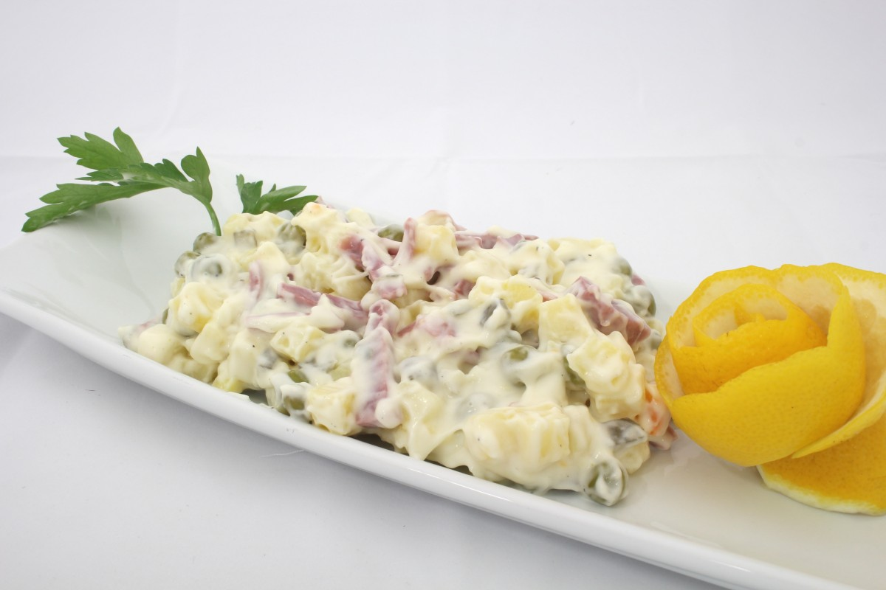

Egg Salad

Description
Classic egg salad with a twist of adding chopped pimento stuffed olives.
Finished with chopped celery and served on toasted bread.
Ingredients
- 8 eggs
- 1/2 cup mayonnaise
- 1 teaspoon black pepper
- 1/4 teaspoon paprika
- 2 tablespoon chopped pimento-stuffed green olives
Steps
- Place eggs in a medium saucepan with enough cold water to cover, and bring to a boil. Cover saucepan, remove from heat, and let eggs stand in hot water for 10 to 12 minutes. Remove from hot water, cool, peel, and chop.
- In a large bowl, mix eggs, mayonnaise, pepper, and paprika. Mash with a potato masher or fork until smooth. Gently stir in the olives. Refrigerate until serving.